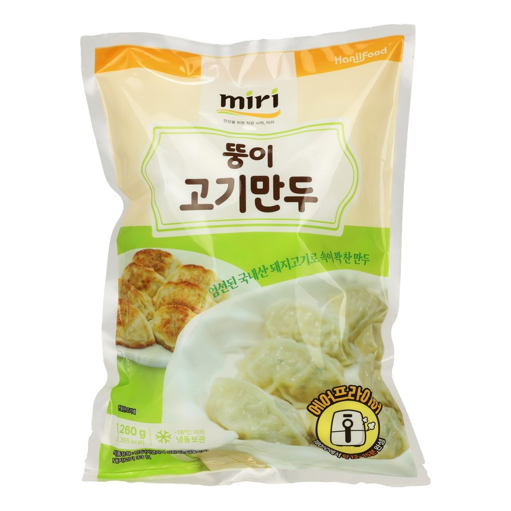

Juicy pork, tofu, and vegetables in a delicate wrapper, ready in minutes — an everyday favorite for weeknight dinners or party trays. MIRI pork dumplings are made as pork and vegetable dumplings rather than pork alone, which keeps the filling light; as frozen pork dumplings go, they crisp instead of turning greasy — crispy pork dumplings with a shell that holds.
| Product Name | miri Pork Mandu |
|---|---|
| Net Weight | 1,260g (6 pkgs) / 630g (14 pkgs) |
| Shelf Life | 18 months |
| Storage | Keep frozen under −18°C |
| Ingredients | Pork (Korean), wheat flour (Australian), tofu (soybean), chives, onions, complex seasonings, dried radish, vermicelli, garlic, modified starch, mixed soy sauce, sesame oil, soybean paste, salt, ginger. |
| Nutrition (per 100 g) | 190 kcal · Protein 7 g · Carbohydrate 18 g · Sugars 3 g · Fat 10 g · Saturated 3 g · Trans fat 0 g · Cholesterol 20 mg · Sodium 350 mg |
| HS Code | 1902.20-0000 |
| Certifications | HACCP · ISO 9001/22000 |
| Private Label / OEM | Available |